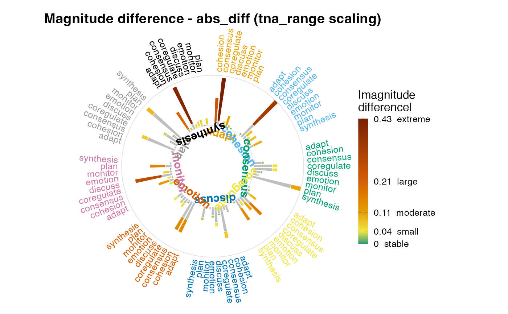
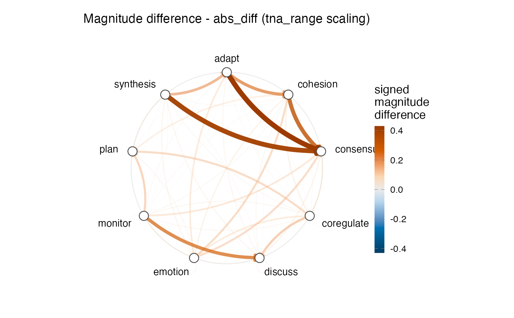

Magnitude difference between the frequency and probability views
Source:R/magnitude_difference.R
magnitude_difference.RdQuantifies, per edge, how much row-normalization moves a transition
network between its two natural summaries: raw transition counts
(frequency / FTNA, build_network(method = "frequency")) and
row-conditional probabilities (TNA, build_network(method = "relative")).
The two matrices rank edges differently — an edge that is large in counts
can be modest in probability, and a rare-source edge can dominate its row
in probability. The per-edge discrepancy on a common scale is the
magnitude difference.
Usage
magnitude_difference(
data,
actor = "Actor",
action = "Action",
time = NULL,
metric = c("abs_diff", "chord_dist", "atanh_diff", "geom_norm_diff", "cv_inflation"),
scale = c("tna_range", "rank_minmax", "minmax", "none"),
format = c("auto", "long", "wide")
)
# S3 method for class 'magnitude_difference'
print(x, ...)
# S3 method for class 'magnitude_difference'
plot(x, type = c("stacked", "circular"), min_show = 0.01, title = NULL, ...)Arguments
- data
Long- or wide-format event log (
data.frame).- actor, action, time
Column names in
data(long format).timemay beNULL.- metric
Discrepancy metric. One of
"abs_diff"(default; absolute difference, simplest and most robust),"chord_dist"(chord distance on the unit sphere),"atanh_diff"(Fisher z-style on a bounded scale),"geom_norm_diff"(geometric-mean normalized; amplifies small edges),"cv_inflation"(per-vector SD-standardized then absolute difference).- scale
How the two weight matrices are placed on a common scale before differencing.
"tna_range"(default) rescales FTNA linearly into TNA's[min, max]range and leaves TNA untouched, so the difference is in TNA probability units."rank_minmax"converts each matrix's values to ranks scaled to[0, 1](ordinal)."minmax"scales each matrix's raw values to[0, 1]separately (asymmetric — TNA's max and FTNA's max map to the same value despite differing native ranges)."none"uses raw weights.- format
Input format passed through to
build_network();"auto"(default) treats the data as wide whenactionis not a column.- x
A
magnitude_differenceobject.- ...
Passed to plotting helpers (ignored by
print).- type
Plot style,
"stacked"(default) or"circular".- min_show
For
type = "circular", drop edges whose magnitude is below this fraction of the maximum.- title
Plot title.
NULLgenerates one from the metric and scale.
Value
An object of class "magnitude_difference": a list with
$edges (per-edge data.frame with columns from, to, ftna,
tna, signed = tna - ftna, and value = the chosen metric),
$metric, $scale, $weights_ftna, $weights_tna, and $states.
print invisibly returns x.
plot returns a ggplot object.
Methods (by generic)
print(magnitude_difference): Print a compact summary of the per-edge magnitude-difference distribution.plot(magnitude_difference): Plot the per-edge magnitude difference as a polar portrait.type = "stacked"(default) draws one sector per from-state with stacked wedges (grey base = shared value, colored tip = magnitude difference);type = "circular"draws a chord-style diagram with signed differences on a diverging blue-orange scale.
Examples
data(group_regulation_long, package = "Nestimate")
fit <- magnitude_difference(group_regulation_long,
actor = "Actor", action = "Action",
time = "Time")
print(fit)
#> magnitude_difference object
#> metric: abs_diff scale: tna_range
#> states (9): adapt, cohesion, consensus, coregulate, discuss, emotion, monitor, plan, synthesis
#> edges: 81
#> magnitude-difference summary (abs_diff):
#> Min. 1st Qu. Median Mean 3rd Qu. Max.
#> 0.00000 0.01143 0.03002 0.06035 0.06894 0.42910
# Edges most promoted by row-normalization (rare-source transitions):
head(fit$edges[order(-fit$edges$signed), c("from", "to", "ftna", "tna")])
#> from to ftna tna
#> 19 adapt consensus 0.04830269 0.4774067
#> 27 synthesis consensus 0.06042805 0.4662577
#> 20 cohesion consensus 0.16776736 0.4979351
#> 43 monitor discuss 0.10694175 0.3754361
#> 10 adapt cohesion 0.02762993 0.2730845
#> 9 synthesis adapt 0.03041280 0.2346626
# \donttest{
plot(fit) # stacked polar portrait

plot(fit, type = "circular") # chord-style diagram

# }